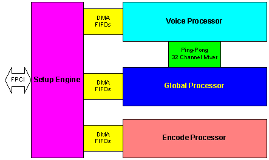
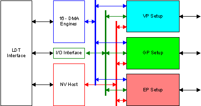
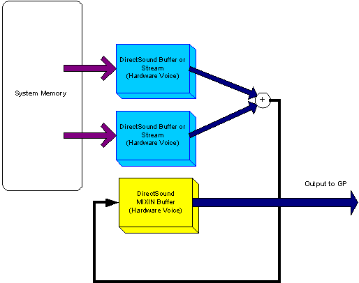
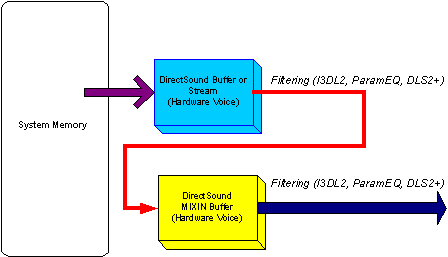
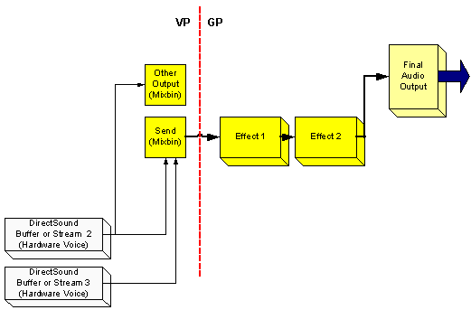

By Scott Selfon, Audio Content Consultant, Xbox Content and Design Team
This chapter of Best Practices for Xbox Audio Design discusses the audio hardware features of the Xbox® video game system from Microsoft. Xbox Development and Debug Kits (XDKs) contain the same audio hardware as consumer consoles. We will point out the architecture and features, as well as how they interface with Xbox audio libraries and content. This chapter will also address other audio considerations relating to hardware, including multi-speaker surround, use of the hard disk, and use of the game disc in relation to audio.
The Xbox Media Communications Processor (MCP) is the audio equivalent of the Xbox graphics chip in that it is very powerful and is a multi-processor pipelined stage architecture. Four independent hardware processors pertain to audio:1

Illustration Overview of Xbox MCP audio processors
The Xbox MCP supports 256 total hardware voices, each of which can use pulse code modulation (PCM) or adaptive differential pulse code modulation (ADPCM); 192 of those voices are 2D/wavetable voices (all supporting both the Downloadable Sounds Level 2 (DLS-2) specification and additional filtering capability), and there are 64 3D Head Relative Transfer Function (HRTF) voices. The chip supports 3D positional effects (reflection, occlusion, obstruction, reverb) compliant with Interactive 3D Level 2 (I3DL2) for all 3D voices. The audio subsystem uses both the unified memory architecture and the hard disk for fast access to huge amounts of audio data.
The chip accepts 8- and 16-bit data at input and internally uses 24-bit resolution and 48 kHz. It is generally recommended that source audio be recorded at 48 kHz or lower; higher sampling rates will be subject to aliasing. Output sampling rate is 48 kHz, with 20-bit resolution.
The Setup Engine provides the Xbox MCP with its connection to the unified memory architecture (UMA) through 16 DMA engines. It also manages the data transfers between the three other processors. The Setup Engine additionally is responsible for "housekeeping" chores, including padding 8- and 16-bit data (accepted as input) to the 24-bit depth used internally. And lastly, it manages parameter ramping for some parameters. The Setup Engine is accessed through Microsoft® DirectSound®.

Illustration Setup Engine interfaces
The Voice Processor (VP) is a fixed function DSP for voice support. Input data can come from three sources:
The VP consists of 256 hardware PCM/ADPCM voices, which are sample rate converted to 48 kHz using multipoint interpolation. There is no CPU overhead for sample rate conversion, so using multiple sampling rates for source wave data (or sampling rates that are not multiples of 48 kHz) has no negative performance impact. ADPCM decode is performed onboard the chip, so there is no memory footprint or CPU hit for ADPCM use.
Each voice has two programmable DAHDSR (Delay Attack Hold Decay Sustain Release) envelopes (for volume, pitch, or DLS-2 filter cutoff frequency) and two low frequency oscillators (LFOs, which can control amplitude, pitch, or DLS-2 filter cutoff frequency) that conform to the DLS-2 specification. Each voice also has a programmable filter block, with combinations of DLS-2, parametric EQ, and/or I3DL2 filtering possible.
The following table shows the filter modes for each kind of buffer.
| Filter mode | Stereo buffer | Mono 2D buffer | Mono 3D buffer |
|---|---|---|---|
| 0 | Bypass all filtering | Bypass all filtering | RESERVED |
| 1 | DLS-2 filter | DLS-2 filter | DLS-2 and I3DL2 |
| 2 | Parametric EQ | Parametric EQ | Parametric EQ and I3DL2 |
| 3 | RESERVED | DLS-2 and parametric EQ | I3DL2 only |
Note that stereo buffers can have DLS-2 or parametric EQ filtering, but not both.
After the filter block, a mono voice may be split and routed to up to eight destinations (each with separate volume control), known as mixbins. For stereo voices, the left and right channels can be routed to up to four mixbins each. The Xbox MCP has 32 mixbins. Some of these are predefined and represent data that should go directly to a specific channel (for example, left or right surround). As mentioned previously, using channel panning, you could do your own spatialization of sounds using the 192 2D voices. Twenty of these mixbins are user definable and generally termed "send mixbins" because these audio mixes can be sent to the Global Processor for real-time effects processing.
A few additional features of the voice processor that increase its flexibility:


For more information on chaining and submixing, please see the white paper titled Chaining, Submixing, and Multipass Effects.
The Global Processor (GP) is a programmable DSP for effects processing. The chip is compatible with custom programs written for the Motorola 56300. We supply several effects, each of which can be instantiated multiple times within a single program, limited only by the size of the GP's memory. The full list of effects can be found by running the DSP Builder tool, but some include:
Sizes of each effect can be found by looking in the *_state.ini file for each effect, and are also displayed automatically within DSP Builder. For more details, see the white paper entitled Authoring and Auditioning Effects Programs.
Effects can be applied to any or all of the send mixbins. Effects can also be chained together (that is, apply a flanger, then apply distortion to the output of the flanger effect), again, up to the limits of the size of the GP.
The output of an effect can be:

Illustration Global effect signal flow.

Illustration An example of multipass effects signal flow
For more details, see the white paper Chaining, Submixing, and Multipass Effects.
Finally, when all of the sounds are mixed together, the six speaker mixbins from the GP are sent into the Encode Processor (EP) for final audio delivery. The EP can deliver audio in one of several formats:
The user decides the specific format in their Xbox Dashboard settings. Note that the hardware can automatically mix down multi-channel audio to stereo or mono. For more details on downmixing, see The Surround Experience: Authoring for and Implementing Multichannel Audio Playback.
The latencies for the VP, GP, and SE are 32 samples each, which is roughly two-thirds of a millisecond (msec). A full audio path leading from the VP to the input of the EP is approximately 2 to 3 msec. The latency for the EP varies depending on output format, as discussed below.
The full path latency (time from the developer triggering a sound to the consumer hearing the decoded signal out of their speakers) is approximately:
The Xbox implementation of the Dolby Digital encoder is using a new high-performance encoder we worked with Dolby to optimize for real-time applications. It typically require only around 25 msec to encode a 5.1 stream, compared to standard Dolby Digital latencies of more than 100 msec. Since a standard consumer decoder requires, on average, around 20 msec to decode a Dolby Digital stream, the full path latency—from the time you play a wave using DirectSound, XACT or Microsoft® DirectMusic® to the time a user hears the decoded wave output through their speakers—will be approximately 47 to 51 msec.
A few separate areas to address here:
The Xbox hardware has three plugs on the rear panel: power, Ethernet, and integrated audio/video. Three different audio configurations (in four total configurations) are encountered on end user machines:
As previously mentioned, the end user can decide in the Xbox Dashboard what format they want for output-mono, stereo, Dolby Surround, or Dolby Digital (last option available only on enhanced and component AV adapters). The DTS option in the Dashboard is provided primarily for DVD movie playback, as the Xbox does not possess hardware DTS encoding capability.
If users wish to use headphones, they plug them into their receiver units, not into the Xbox console. Note that we provide HRTF processing optimized for both speakers and headphones. If you wish to optimize for headphones, you should expose an option to players to use headphones, and use the IDirectSound::EnableHeadphones interface, which disables crosstalk cancellation and switches HRTF processing to use a 2-channel algorithm.
The Xbox game disc format allows for more than 8 GB of data to be stored. The game disc should typically be used for audio where latency doesn't matter as much (for example, things like unsynced dialog and streamed ambience), though the advent of primed streaming through XACT allows you to prepare sounds ahead of time and avoid startup latency. But in general, it is recommended that you make use of the hard disk (covered in a moment) for more latency-critical playback, such as sound effects or lip-synced dialog.
Note that because the disc drive uses constant angular velocity (the disc always spins at the same speed), throughput varies based on the data's location on the disc; more throughput is available at the outer edge of the disc than at the innermost tracks. Data that requires more bandwidth should be placed toward the outer edge.
Because of the relatively high access times for game disc seeking, it is generally recommended that streamed audio tracks be closely paired with other data that will be accessed at the same time, or be placed on the hard disk for quicker access. Bundling your audio assets (using XACT or proprietary tools) is also recommended.
| DVD | Hard Disk (Read) | Hard Disk (Write) | |
|---|---|---|---|
| Access time (avg/worst) | 130 msec/300 msec | 3 msec/15 msec | 12 msec/16 msec |
| Throughput | 2–6 MB/sec | > 12 MB/sec | |
As far as throughput, a few numbers to compare to:
| six channel 48 kHz 16-bit stream | 576 KB/sec |
| four channel 48 kHz 16-bit stream | 384 KB/sec |
| WMA streams (typical) | Varies: 0.625–24 KB/sec |
Based on these numbers, you could theoretically have between three and ten streams of six-channel audio streamed simultaneously off the game disc (assuming they were positioned close to each other).
Optimized asynchronous game disc reads will be sector-aligned (2048 bytes for the game disc), which is how XACT automatically aligns waves placed in wave banks intended to be streamed from the game disc.
As discussed above, the hard disk should be used where latency is critical. You also get additional throughput and minimized access times, which will aid in delivering many smaller sounds for rapid and/or simultaneous playback. Using XACT, wavebanks containing primed streaming waves are typically placed on the hard disk (with the very beginning of the wave in memory for zero latency playback).
The 8 GB hard disk is divided into several different partitions, two of which will concern us here. Other partitions are used for things such as saved games and persistent game state data.
A word about the utility region: There are actually three separate 750-MB partitions. A title should assume that the utility region it is granted on startup is empty-there is no concept on Xbox of installation space; in most cases, the partition is wiped when the machine is turned on. However, if a title is booted and one of the three partitions was last used by it (that is, no more than two other unique titles have been played since the last time this one was), it may be granted the same partition it used previously. This will allow quicker startup in such circumstances, because some or all data pulled down from the game disc may still reside on the hard disk. It is up to the particular title to confirm this.
Optimized asynchronous hard disk reads will be sector-aligned (512 bytes), which is how XACT automatically aligns waves placed in wave banks intended to be streamed from the hard disk.
WMA files are real-time decompressed using host software. Xbox also supports arbitrary software compression technologies by using the Xbox Media Object interface.
Note that because Xbox Media Objects run in software, they will have to use some portion of the CPU. WMA decompression typically occupies roughly five to ten percent of the CPU per stream. Processing power needed by other Xbox Media Objects will vary based on compression scheme.
ADPCM-encoded wave content is decompressed for playback by the Xbox MCP. There is no CPU hit, nor any added memory implication, as the wave is decompressed onboard the audio chip.
3D positioning of sounds does take a small amount of CPU for the raw mathematical calculations, though the mixing, crosstalk, and filtering are all applied in hardware. To minimize this CPU hit, make sure that all sounds that originate at the same source are played in 2D voices and then mixed to a single 3D voice for positioning. This will also make better use of the finite (64) number of 3D voices.
The unified memory architecture is a 64 MB shared memory space, which is used by graphics, audio, drivers, the game executable, and other aspects. As far as audio is concerned, the UMA is used for several purposes:
Note that XACT and DirectMusic sit on top of DirectSound, and DirectX Audio Scripting sits on top of DirectMusic. Again, using scripting does not automatically mean you will have a 510-KB footprint; using a subset of DirectMusic features can drop this number significantly.
ADPCM-encoded wave content is decompressed for playback onboard the Xbox MCP as it is to be played. There is no additional memory footprint requirement (beyond the space the original ADPCM-encoded wave occupied).
The Xbox MCP has several memory limitations to be aware of. It is limited to 8 MB of audio data that can be simultaneously played from in-memory buffers, and 16 MB of data that can be simultaneously played overall (in memory + streamed). The in-memory 8-MB limitation applies primarily to one-shot waves (entirely loaded in memory) and DLS waves. Note that you could download a DLS collection larger than 8 MB, but only 8 MB of its waves can be played simultaneously. The limit also only counts each unique source wave that is playing. If, for instance, you had a 1-MB piano sample, playing a three-note chord would still only take 1 MB of the 8-MB limit. ADPCM hardware decompression is not counted toward either limit, only the size of the original compressed file is considered.
1 The Xbox MCP separately hosts the hard disk, game disc, USB, Ethernet, and Lightning Data Transport (LDT) controllers. These controllers are not addressed in this document.
2 HRTF stands for Head Relative Transfer Functions. HRTF encoding allows for emulation of three-dimensional acoustic placement from only two speakers. In its most basic form, it is generally most effective over headphones. Xbox uses HRTF as the source for encoding real-time 3D positioned sounds to two- or four-speaker formats.
3 I3DL2 is an industry standard for distance modeling. The Xbox MCP implementation allows for low-level parameter control, or use of high-level presets (cathedral, small room, and so on). Note that I3DL2 reverberation is not geometry based, though a game engine could use geometry to determine real-time value changes for the low-level parameters.
4 For more information on multichannel authoring and implementation, see the white paper The Surround Experience: Authoring for and Implementing Multichannel Audio Playback.